Once a week, the taste-making intelligentsia of Quartersnacks meet in the upper chambers of their secret New York headquarters to contemplate the latest onslaught of skateboarding footage coming from all corners of the globe. Thus is decreed the official doctrine that is the #QSTop10 countdown.
Athletic agents, Olympic bureaucrats, hot spot gatekeepers, and skate nerds of every assortment await the weekly drop to find out who is in the vanguard, what gear is trending, and what tricks are no longer illegal. Footwear contracts, video game likeness rights, and occasional acknowledgement from obscure skate blogs are just some of the potential rewards of making the cut.
While no one has ever penetrated the guarded rituals and secret deliberations of the Top Ten, we here at 4Ply Magazine have undertaken to process every trick that made the countdown in 2020 with the goal of finding out, utilizing the power of percentages, what it takes to gain access to the rankings.
With all the data carefully inputted via thousand of precisely ordered punch cards, we can finally dig deep into the year the planet broke and answer the really important countdown questions like “what spot appeared most often”, “what percentage of clips came from Instagram?”, “who had the longest line?”, and, perhaps most crucially, “how often did Lucas Puig appear in the countdown shirtless?”
What does it take to get your clip noticed by the exalted sentinels of skateboarding?
Let’s find out.
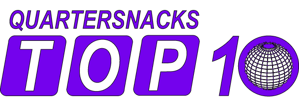
DATA & METHODOLOGY
All tricks, stances, and spots were identified and logged to the best of our ability. This dataset included all countdowns starting on January 10th and ending December 18th, making for a total of 49 weeks. Any tricks happening during the countdown’s intro segment were not included. You can view the dataset here.
In addition to skater, trick, rank, obstacle, and location, we also created a weighted “Points” metric for each entry based on its rank within that week’s countdown. For instance, a trick ranked #1 would receive 10 points, #2 receives 9 points, #3 gets 8, and so on.
MOST APPEARANCES
Of the 490 slots available, there were 354 different skaters making appearances. 272 skaters made a single appearance on the countdown and 82 skaters made it into the #QSTop10 more than once in 2020.
Of these multi-hitters, 48 appeared twice, 20 skaters appeared thrice, and 14 maniacs consistently destroyed the feed over and over. Let’s take a look at the gentlemen who showed up 4 or more times:
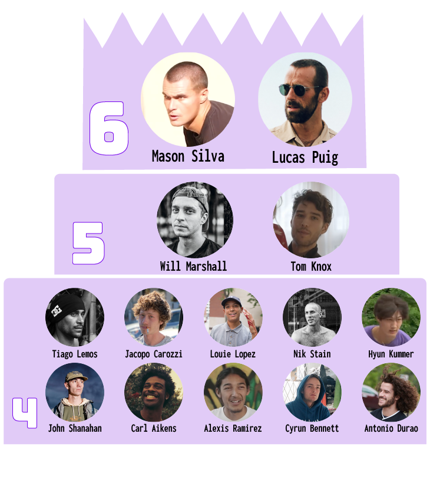
THE OVERALL POINTS CHAMPIONS
Nothing makes hardcore soul skaters more pleased than the quantification of street skating, so utilizing our weighted Points metric, let’s see who had the heaviest year.
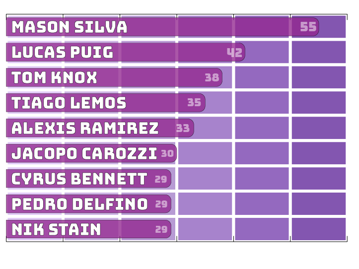
It should not surprise you that the two skaters who racked up the most appearances also tallied the most points.
Sure he got SOTY, but Mason Silva’s dominance of Quartersnacks really locks in what an exceptional year he had in 2020. He was all up in the countdown all year, landing the #1 best trick of the week 4 times. He started the year with that fucked up fakie flip in his Tampa Pro run and then stayed on top mostly with death defying handrail tricks.
Lucas Puig, who wasn’t even on Thrasher's list of 36 contenders for SOTY, found success this past year along a much different path. While Mason was on a non-stop national tour of destruction, Lucas kinda just lingered around the beach near his home, spending time with his friends and family, casually kickflipping sneakers, and generally winning at life.
Lucas also won, by a landslide, the category of most appearances in the Top Ten wearing shorts with 3 clips. Shockingly, he only appeared shirtless once.
It can be an interesting excersize to notice where the Top Appearances and Top Points lists diverge. For instance, Will Marshall, who tied with Tom Knox for runner-up of most appearances with a very impressive 5 times, ranked significantly lower (10th) in points.
And give it up for Brandon Turner and Axel Cruysberghs for making the most of their two appearances each by hitting both first and second place each.
Tyshawn and Pedro also hit hard in their 3 appearances each, and we’ll look at each of them in more detail a bit later on.
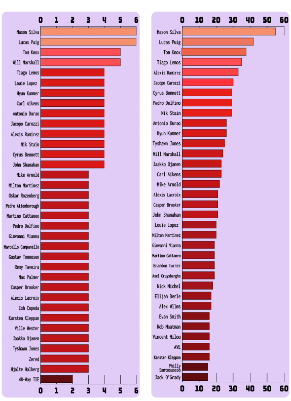
TOP TRICKS
There are generally 4 ways for a skater to get a clip in the coveted #QSTop10: Get buck, get tech, style it out, or do something unexpected. With this in mind, there were a remarkably diverse number of tricks making appearances. Of the 490 tricks in the 2020 countdown, there were 369 unique tricks or trick-combinations. That means over 75% of tricks in the countdown were only seen once all year. In fact, only 21 tricks (less than 6%!) occurred 3 or more times. The tricks that did get honored most frequently were often included for the gnarly terrain upon which they were done, thus the prevalence of simple tricks at the top of the chart.
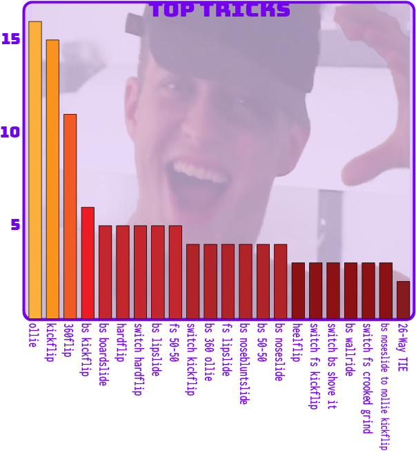
Big old ollies top the list, followed by kickflips and 360flips. Surprisingly, some simple tricks that look great on big sets, such as 180s and shove its, didn’t get much love.
The most common switch trick was the switch hardflip with 5. The highest ranking tech trick would be nollie flipping out of a backside noseslide, which happened all of 3 times. And then, as you can see, we are quickly down to tricks done just once or twice.
So what tricks did not appear much in the #QSTop10? Grabs.
If we include a couple of board touches on particularly hairy bomb drops, there were still just 6 tricks that involved getting handsy. Mathius Sauvageon also did a boneless.
Some other interesting trick trends that you could utilize to formulate your way into the Top Ten:
- 16.3% of tricks were done switch or nollie, which is surprisingly low. The skater with the most switch/nollie clips was Lucas Puig, who went 6-for-6 to sweep the category.
- Including the 3 plain old backside wallrides, there were 27 tricks that integrated a wallride in some capacity.
- While only 11 tricks were straight-up 360flips, 24 tricks involved a 360flip.
- Trick and trick-combinations incorporating a kickflip outnumbered those with a heelflip by a ratio of nearly 4 to 1.
- 51% of tricks logged contained a ‘backside’ element while just 29.2% of tricks contained an element of ‘frontside’.
- There were 9 slappies this year, so don’t give up your countdown dreams yet, old man.
- 4 clips involved riding in the dirt or grass.
- The nollie/fakie wallie jammy style tricks are catching on with 4 appearances in 2020.
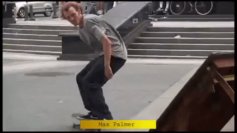
Our computers attempted to determine which tricks could be labelled “Most Complicated” by quantifying the number of times we had to utilize the phrase “to” when logging the trick. However, the inclusion of rapidly executed ‘quick footed’ no-setup trick sequences as a single entity made the designation of a most complicated trick, well, kinda complicated. Indeed, 28 clips were of the quick-feet variety.
Example: Jaakko's frontside crooked grind to fakie to frontside 180 to switch backside 180 to fakie frontside half cab kickflip.

Does something like this qualify as a single trick or is it more of a short line? Either way, it's countdown gold.
OBSTACLES
So what terrain do the tribunal of judges at Quartersnacks fancy? Check the pie-chart for the official terrain breakdown.
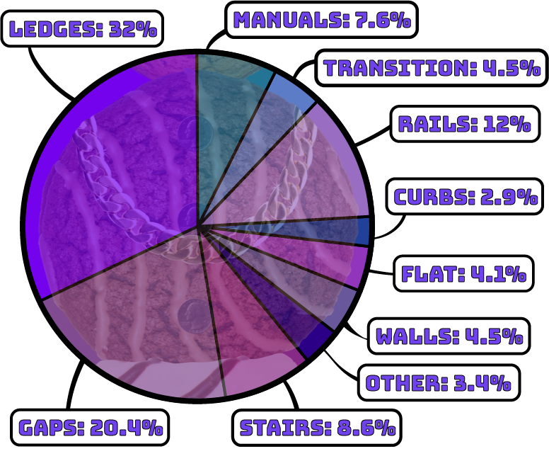
Easily the highest percentage of obstacles were of the grindy/slidey variety. Nearly a third of all tricks were on ledges (with 17% of the ledge tricks being on hubbas).
20.4% of tricks were on various types of gaps, including flat gaps, ramp launches, and drops. When combined with the 8.6% of tricks done down (and up) stairs, over a quarter of the tricks of note in 2020 were hucked.
Other significant samplings of obstacles are 12% on rails (with slightly less than half of those being handrails), 7.3% manual tricks, and 4.5% on the walls. There were also a handful of tricks on flatground, curbs, hips, flat banks, and some curb cuts. There were 3 tricks we would consider ‘pole jams’.
Most surprisingly is seeing that for all the ridiculous talent happening in the bowls these days, less than 5% of the #QSTop10 tricks were on transition.
One should also contemplate the idea that going up stairs is no longer novel; It happened 11 times (plus an additional instance with a wallride up stairs).
Also in the vanguard is the whole “to curb” thing (and we’re not talking about slappies): 4 gap to curb tricks, 2 handrail to curbs, and 2 tricks over garbage cans to curbs.

And to really impress the QS gatekeepers, take note that over 17% of clips were made possible by combining obstacles: ledge to rail, ledge to ledge, ledge to wall to ledge, gap to rail... the possibilities are endless.

GETTING OVER and GETTING UP
12% of all tricks logged were over some sort of object. What types of things should you be tricking over in these uncertain times?
- 28 tricks were over rails (8 of which were over rails and into banks).
- 7 tricks were over trash cans, twice landing directly into a lipslides, and once over the trash from a ledge trick.
- Plus a handful of tricks were over fences, hydrants, benches, and barriers.
LINES
Lines were indicated in the dataset if the clip consisted of (surprise) a full line. However, for our purposes, only what we considered to be the standout trick of the line was what we tallied. After-hammer flatground tricks are not considered indicative of a line. Lines of significant length (5 tricks or more) were noted, but powerslides and ollies up a curb were not included in the count.
- There were 137 lines in the 2020 #QSTop10. That’s about 28%.
- Most lines in a weekly countdown: 6 (3 occurrences)
- Least lines in a weekly countdown: 0 (only happened once).
- Longest line by trick count: Tom Knox’s 8 trick Majorica masterpiece.
- Longest line by duration: Taylor Smith’s 46 second marathon in the SF Hills.
- Number of 5 trick lines appearing in #QSTop10 in 2020: 8
- Number of 6 trick lines appearing in #QSTop10 in 2020: 5
- Number of 7 trick lines appearing in #QSTop10 in 2020: 2
- Lord of the Lines: While it is a 7 way tie for most lines with 3 instances, we’ll give it to Casper Brooker, whom was 3-for-3 with lines for his clips.
GRAM FAM
We live in a wonderful/horrible time where Instagram is now a viable conduit for top quality skateboarding clips. When all was said and done, 106 clips in the 2020 Top Ten came from the Gram. That’s 21.6%! The week of July 3rd had a record breaking 8 IG clips. However, it wasn’t exactly rare for the countdown to not feature in any tricks culled from social media (happened 7 times).
While Lucas Puig had 4 of his 6 clips come from the Gram, the real champion of social media is hair care influencer Antonio Durao, whom had 100% of his 4 clips fresh from the Insta feed (and this doesn’t even include his appearance in the #QSTop10 intro where his board falls into a cellar).
Honorable mentions go out to @akeemvstheworld for being the only skater to be fully identified by his IG handle, Hyun Kummer for not being identified by his IG handle this year, and Octoveli for having the only clip to be pulled from Reddit.
RUN IT BACK TURBO
Some tricks are so nice you get to see them twice. Or sometimes from another angle. Or sometimes a second time but in slow motion. Or, on 15 occasions, 3 times with the rare triple replay.

Either way, we recorded how often tricks were replayed in the countdown. This includes tricks shown from two angles, replayed in the original source video, or replay created by Quartersnacks. We also included lines where just one trick was replayed.
In total, 177 tricks (36.1%) were shown more than once. The skater who got the most replays with their clips was Mason Silva, whom was reshown 5 times.
Similarly, we observe that exactly a third (33.3%) of all clips featured some slow motion footage. Be it the full clip, or just part of the trick, or the replay, or a few times not even the trick but the roll away; Slow-mo was in there somewhere. The skater with the most clips having slow-mo elements? You guessed it: Lucas Puig with 5.
TOP SPOTS
In an attempt to help you focus your skateboarding attention-getting efforts geographically, the team at 4ply attempted to record any recognizable spot in each clip. Despite our intense skate nerdery and our constant bragging that we did, indeed, skate New York City “back in the day”, there is the possibility that some spots weren’t recognized or recorded.
As expected, there is plenty of NYC to be had. Approximately 11% of the clips went down in the New York area. But the most popular spot of all wasn’t even in America. Let’s take a look:
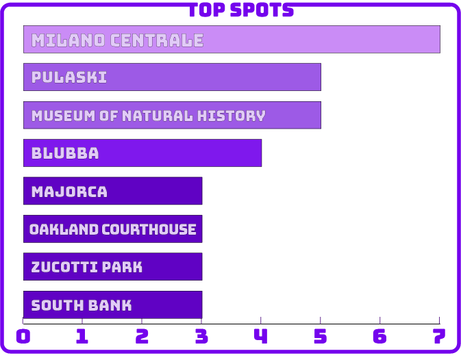
The Milano Centrale Railway Station in Milan, Italy, was the most honored spot in 2020 with 7 clips. Pulaski "Freedom Plaza" Park in DC was also up there with 5 clips, and the Museum of Natural History in New York (racist statue and all) was the Big Apple’s top spot with 5 clips. Also coming in with multiple clips were Blubba, that plaza in Majorca, the Oakland Courthouse, and London’s South Bank. 8 clips were recorded in the hills of San Francisco, but that is more of a ‘locale’ than a spot.
Famous global terrain like MACBA, 3rd & Army, the Tekashi Ten, Staples Center, Union Square (in SF), and Stalin Plaza all just had 2 clips each in 2020. It’s a real testament to the spirit of skaters staying local and making it happen with whatever they had nearby during the pandemic.
An amusing footnote to the utilization of Blubba: while the spot appeared 4 times in the #QSTop10 of 2020, only 1 trick was done on Blubba. 2 tricks were done over it and 1 was done right next to it on a popped-up access panel (see previous Max Palmer gif).
Getting your trick within the safe confines of a skatepark is not exactly a dealbreaker for getting a trick into the #QSTop10, although you best be doing some Oski level shit.
- 18 clips went down at concrete outdoor parks.
- 7 clips were filmed on DIY skate spots and obstacles.
- 4 clips came from indoor wooden parks.
- 1 clip came from the Berrics.
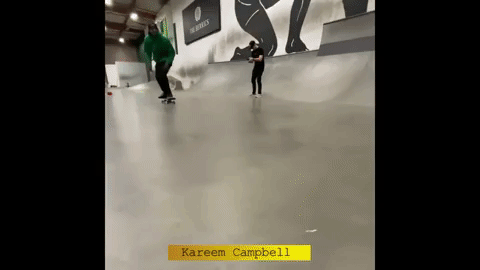
LET’S GET NUTS
What the Top Tricks and Obstacles charts don’t reveal, but you need to know, is that on 26 occasions a trick made it into the countdown likely on account of the craziness of the obstacle it was performed on. Be it Ben Raybourn momentarily emerging from exile to death drop off an elevated walkway, Karsten Kleppan stalling on a chain, Myquel Haddox crooked grinding a fucking cherry picker, or Daewon getting ill on a pile of garbage. The kids are dropping in on basketball hoop poles these days so find the most unskateable rubble you can and get to work!
We should also mention the 4 separate tricks on art sculptures that went down.
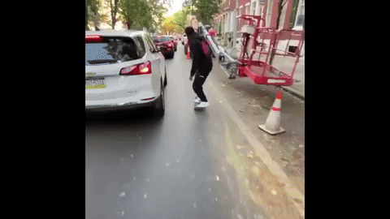
NUMBERS OF OCCURRENCE:
Just for fun, we also noted occurrences of specific skate phenomena throughout the year. How you utilize these numbers to get your footage noticed by Quartersnacks is on you. The secret messages hidden in these numbers is on Puleo.
- 15 tricks were labelled as a ‘combo’, where multiple tricks or obstacles were linked together, typically with a manual. However, your usual trick in/out of manuals don’t qualify. We’re talking some THPS shit here.

- 3 tricks were done on what we consider ‘novelty shaped’ boards (and none was by Chico). Interestingly, none of these made the countdown due solely to being done on an impractical deck shape. How Tyshawn did that backside flip on that Hardies board is beyond us.
- Speaking of Tyshawn, he secured spots in the top 3 for 3 consecutive weeks in May, all with Instagram clips.
- Women skaters appeared in the countdown a combined total of 7 times with Alexis Sablone being the only woman to appear twice. Alexis also scored the highest spot by a woman with #2.
- 3 different trans or non-binary skaters made the list this year. Leo Baker, Cher Strauberry, and Arin each appeared once.
- Considering the year we had, it is remarkable that only 1 clip appeared to be completely self-filmed in the countdown this year. Props to Branson Howard.
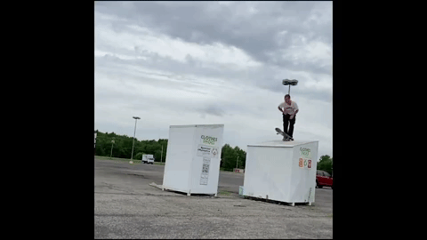
OTHER OBSERVATIONS:
- The average #QSTop10 countdown length is 2 minutes 23 seconds. The longest countdown was 3 minutes 30 seconds. The shortest was 1 minute 46 seconds.
- Way back in January, Aaron Goure did a boardslide cannonball on a cannon.
- In week 21, Abu Sanyang hit the #4 spot with a line consisting of 4 kickflips. Four weeks later, Victor Cascarigny busted some 7-Minute Abs with a 5 kickflip line (although it only netted him the #8 spot).
- In April, both Tiago Lemos and Thiago Lima had lines in the same countdown. Seemed worth noting.
- Pedro Delfino appeared in the countdown 3 times and they were all heavy, netting the top spot twice and getting ranked number 2 the other time. Fabiana Delfino also made it into the countdown once.
- In addition to winning it all with his 6 tricks in the countdown, Mason Silva also managed to have the distinction of having 3 separate skate clips all crammed into his #1 ranked appearance on July 17th.
- The most popular first names to appear in the countdown this year was Max (6 skaters) and Alex (also 6 skaters). There were also 3 Alexis, an Alexey, and an Axel.
- There was a Marca, a Marcus, a Marcel, a Marcello, 3 different Marks, and 1 Marky. No Marcs with a "c" though.
- The most popular first letter for a first name was “J” with 42 distinct skaters.
- On no less than 4 occasions the overworked folks at Quartersnacks mislabelled a skater in the video clip. This was usually corrected in the spoilers or comments.
- One skater literally goes by two different full names, depending if you referenced the countdown video or the spoiler list of links. Another skater is identified by an acronym (can you guess who?). There was also one skater who had a “Lil” name, because he is little.
- 3 times in 2020 the #1 spot was given in tribute to a late skate legend: Dylan Rieder in February, Jeff Grosso in April, and Huf in September.
- Quartersnacks introduced the new look to the countdown at nearly the halfway point in June.
- There was no countdown for the final two weeks of 2020, so you'll have to wait to see Midler's 360 into the carwash.
- The #QSTop10 on June 4th was dedicated to more important things than skateboarding and wasn’t logged for this article. Watch it again right now.
So there you have it. With all the above information at your disposal, you can now forge the best strategy to get your own name at the top of the Quartersnacks rankings in 2021.
We suggest either making the choice to skate like Mason Silva, moving to France and skating nothing but switch stance tricks while wearing shorts (and coordinating your lines with skywriting airplanes wouldn't hurt), or being a ledge skater filming lines at the Milan Train Station whose name starts with the letter J.
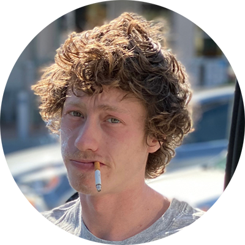
Follow Quartersnacks to keep abreast of all the latest #QSTop10 action: @quartersnacks. Nerd out to skate videos with Pete at @warmupzone. Get all your skate data needs fulfilled at @4plymag.
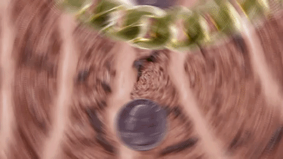